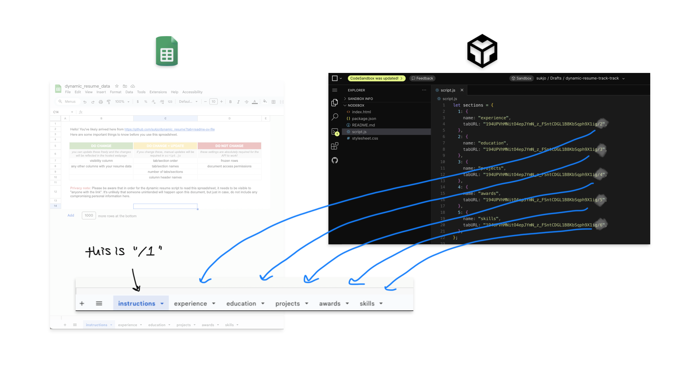

Welcome to the Dynamic Resumes for the Dynamic Being workshop page ☺
A dynamic resume allows you to swap out the contents of your resume with the click of a checkbox, while retaining the overall formatting.
Project Preview
This is a preview of what we'll be making today:

Basically, it's a "smart" resume. All the main contents of your resume are stored in a cloud-based spreadsheet, which itself connects to a webpage. All you have to do to add or remove past work experiences is check or uncheck a box in the spreadsheet. The results are automatically formatted into a single-page, print-friendly layout using HTML, CSS, JavaScript, and jQuery. Since the resulting file is a webpage, you can also use it to host your resume online.
Here's what we'll be using to make the dynamic resume:
- Google Spreadsheet with your resume data
- The dynamic resume template AKA the webpage code (we'll be using ours in CodeSandbox, an online IDE. This project formerly ran on Glitch, before it ended project hosting in July 2025.)
- Opensheet API by Ben Borgers
Background
I first designed this resume for my own purposes while I was looking for work in early 2024. At that time, I was open to many different types of job titles and sectors, as I was trying to pivot my professional life away from serving monopoly capital. I couldn't rely on time-pressed, ambivalent employers to assess my eligibility themselves, so I made a unique resume for each job that included only the most relevant work experiences, retold in the jargon of the target industry. For example, if a role required project management skills, I would make mention of my past project management internship and leave out, say, my former part-time service industry roles to make room on the page.
With the abysmal state of the job market, I soon grew tired of manually cutting and pasting new resumes for each listing that came my way. It was emotionally exhausting to put so much effort into a job application that would not even guarantee me the courtesy of a rejection email. I wanted a way to apply for jobs that was as nimble and callous as the job market itself. I imagined a resume that could shapeshift upon a button's click, while retaining as much honesty as possible. This vision became reality once I realized such a thing was possible using just basic front-end programming.
The resulting template served me so well I shared it with some friends, who shared it with a few more friends. I'm sharing the source code and instructions for this project here today and for posterity as a testament to its utility, but far more importantly, in solidarity with all those who seek work under a soul-corroding economic system where neither wages, healthcare, nor housing are guaranteed to any individual.
My purpose here is not grandiose, nor is it manipulative, because there is no deception in making oneself legible to a labor market that demanded we contort ourselves to fit its standards in the first place. I'm just trying to minimize the amount of menial work we have to do in order to secure a bag so that less of our time, attention, bodies, and spirits are consumed by the task of selling our labor for a living.
With that, let's get into it.
Tutorial
Step #1: Setting up the template
-
Open this Google Spreadsheet. Take a minute to read the instructions page and flip through the tabs to get a sense of the contents.
Basically, this spreadsheet functions as the "backend" of your resume. Each tab, aside from the instructions tab, corresponds to its own section on your resume.

From there, each column within a tab houses a different type of data, such as a job title, a timeframe, or a description.

The checkboxes on the lefthand side are how you tell the template whether to include or exclude a row of data. As you can see, the unchecked rows in the Skills tab do not show up on the resume.

-
When you're ready to move on, make a copy of the spreadsheet and save it as your own.
-
Change the share settings so that "anyone with the link" can view the document.
-
Browse the templates below to decide which one you want to start with. When you decide, click the “use this template” button on the page. This will open up a CodeSandbox project with the template code ready for use.
-
Create an account on CodeSandbox. Once you're signed in, you should see the option to "fork" the template in the upper righthand corner. This will duplicate the template and allow you to edit it.
-
Once you have the project copy open, go to the
script.jsfile (in the lefthand pane) and find thetabURLkeys in thesectionsobject. You’ll want to replace these cryptic strings of characters with the ID of your Google Spreadsheet. -
To find the ID of your spreadsheet, go back to the spreadsheet and click the “share” button. Click “copy link” and paste the link somewhere you can edit it real quick. Then copy only the characters between "https://docs.google.com/spreadsheets/d/" and "/edit?usp=sharing" in the URL. Replace all the
tabURLs in the CodeSandbox file with this new string. -
Add "/1", "/2", etc. at the end of each
tabURLto point to a specific tab in the spreadsheet. You’re going to want to start with “/2” if you’re using my spreadsheet template, since the first tab contains instructions. These indexes are 1-based and determined based on the order of your tabs in the spreadsheet.
-
There you have it! ☺ Your spreadsheet is now hooked up to your CodeSandbox file. Try updating any data in the green cells in the spreadsheet and refresh your CodeSandbox site. If all's gone well, you should see your new data appear in the template.

Let's pause.
Are we all seeing our template update when we change data in the spreadsheet? If not, let's troubleshoot!
Step #2: Updating your personal information
In order to change the name, email address, and other personal
information that shows up on your resume, you'll have to make updates
to the index.html file.
-
Open the
index.htmlin CodeSandbox. -
Locate the lines that contain the filler information (e.g. "Your Name"). Replace these lines with your information. You should see the template update accordingly. From here, you can add or remove elements according to what personal information you want on your resume.
Step #3: Updating Styles
I won’t go into too much detail for the below style updates, but each of these tweaks are fairly manageable for beginner coders and are supported by existing documentation online.
Fonts
Fonts are easy to update. One method of inserting a custom font is to
go to a source like
fonts.google.com
and select some font families you want to use. Once you have your cart
filled, follow the embed instructions to install them in your
index.html. Then update your
stylesheet.css accordingly.
Colors
In the stylesheet.css, look for lines that say
color:, background-color:, or any variation
of border. These lines are the only instances of color
that I’ve already defined in the templates. You can swap out the color
names (e.g. black, dodgerblue) with any
other
supported CSS color
or a hex, RGB, HSL, or HWB value.
Step #4: Updating the data
As you’ll see in the first tab of the spreadsheet labeled “instructions”, any update you make in the spreadsheet itself may or may not require an update in the code. To reiterate these categories again here:
- visibility column
- any other columns with your resume data
- tab/section order
- tab/section names
- number of tabs/sections
- column header names
- frozen rows
- document access permissions (should be "anyone with the link can view")
If you’re satisfied with the pre-provided section headers (e.g. “experience”, “education”, “projects”) and column headers (e.g. “institution”, “degree”, “location”), you can start updating the green cells in the spreadsheet with your own information. If you want to customize these details, proceed through the following steps.
To change a section name:
Updating the section name in the spreadsheet tab does not
automatically rename the corresponding section on your resume. You
also have to update the name of the section in the
script.js file.
-
For consistency's sake, start by renaming the tab in the spreadsheet to whatever you want (i.e. change “awards” to "publications").
-
Then, in the
script.jsfile, go to thesectionsobject at the top and change thenamevalue to your new section name. This will update the section header on your resume template.
To change a column header:
Column headers are what you see in the spreadsheet as “Visibility”,
“Position”, “Organization”, and so forth. To make the dynamic resume
work, you have to change these both in the spreadsheet and the
script.js.
-
Update the name of the column header directly in the spreadsheet first. Keep in mind these are case-sensitive. I recommend capitalizing the first letter to keep things consistent.
-
Go to the section that you updated in your
script.js. -
Find the line that has the name of your old column header (I like to use
CMD + ForCTRL + Ffor this). It should be something like${row.Organization}. Replace the old header with your new one, as it is written in the spreadsheet (i.e.${row.Company}).
Break time!
Let's take 10 minutes to ourselves. When we come back, we can either continue with the last section (which entails a more complicated change) OR co-work on our templates while I answer questions.
To add a new section:
Before you go on, you should know that the following steps require background knowledge of HTML, JavaScript, and optionally CSS. If you aren’t familiar with these, I’d recommend you read an explainer first. It’d also be helpful to familiarize yourself with string literals and/or template literals. Even then, you’ll probably have some questions on how to implement a desired output. If you need help, you can ask a question in the chat or email me.
-
Add a new section by inserting a new tab or “sheet” in the spreadsheet. Name it whatever you want the new section of your resume to be.
-
If you want to make each row’s visibility modifiable, as they are in the original tabs, make the first (leftmost) column the “Visibility” column (case-sensitive) and fill the rows with checkboxes.
-
Fill in the rest of the column headers as you desire.
-
After setting up the new section, be sure to freeze the first row in the sheet. This tells the API what to call each column of data.
-
In the
script.jsfile, go to the very bottom where it says/* -------------------------------------------------------------------------- */ /* fill in any new sections here */ /* -------------------------------------------------------------------------- */ -
Underneath this section marker, copy and paste one of the code snippets below, according to which template you're using:
track_track
.then(function () { return $.getJSON("https://opensheet.elk.sh/" + sections[TAB_NUMBER].tabURL); }) .done( /* -------------------------------- section TAB_NUMBER ------------------------------- */ function (data_TAB_NUMBER) { const containerDiv = $("<div>", { id: `${sections[TAB_NUMBER].name}`, class: "sub-container", }); rightcol.append(`<h2>${sections[4].name}</h2>`); rightcol.append(containerDiv); data_TAB_NUMBER.forEach(function (row) { if (row.Visibility == "FALSE") { // if checkbox is unchecked return; } else { $( // FILL IN YOUR DESIRED HTML OUTPUT HERE ).appendTo(containerDiv); } }); });cascadian
.then(function () { return $.getJSON("https://opensheet.elk.sh/" + sections[TAB_NUMBER].tabURL); }) .done(function (data_TAB_NUMBER) { /* -------------------------------- section TAB_NUMBER ------------------------------- */ let rowCount = 0; const containerDiv = $("<div>", { id: "section-TAB_NUMBER", class: "main-row", }); $("#main").append(containerDiv); containerDiv.append(`<h2>${sections[TAB_NUMBER].name}</h2>`); data_TAB_NUMBER.forEach(function (row) { if (row.Visibility == "FALSE") { return; } else { rowCount++; $( // FILL IN YOUR DESIRED HTML OUTPUT HERE ).appendTo(containerDiv); } }); $(":root").css("--sTAB_NUMBER-row-count", rowCount); })button_ups
.then(function () { return $.getJSON("https://opensheet.elk.sh/" + sections[TAB_NUMBER].tabURL); }) .done( /* -------------------------------- section TAB_NUMBER ------------------------------- */ function (data_TAB_NUMBER) { const containerDiv = $("<div>", { id: `${sections[TAB_NUMBER].name}`, }); $("#main").append(`<h2>${sections[TAB_NUMBER].name}</h2>`); $("#main").append(containerDiv); data_TAB_NUMBER.forEach(function (row) { if (row.Visibility == "FALSE") { return; } else { $( // FILL IN YOUR DESIRED HTML OUTPUT HERE ).appendTo(containerDiv); } }); });
-
Replace all instances of
TAB_NUMBERwith the number of your tab in the spreadsheet. Keep the surrounding code intact. -
Replace “// FILL IN YOUR DESIRED HTML OUTPUT HERE” with the DOM elements, classes, and column headers that you want for your new section. I like to use template literals for this part so I can write new elements in HTML.
If you want the section to match the style of previous sections, use the existing section contents in the
script.jsas an example. For example, using the cascadian template, I might add a new section including my statement of intent as such:.then(function () { return $.getJSON("https://opensheet.elk.sh/" + sections[6].tabURL); }) .done(function (data_6) { /* -------------------------------- section TAB_NUMBER ------------------------------- */ let rowCount = 0; const containerDiv = $("<div>", { id: "section-6", class: "main-row", }); $("#main").append(containerDiv); containerDiv.append(`<h2>${sections[6].name}</h2>`); data_6.forEach(function (row) { if (row.Visibility == "FALSE") { return; } else { rowCount++; $( `<div class='item'> <p class='time'>${row.Statement}</p> </div>` ).appendTo(containerDiv); } }); $(":root").css("--s6-row-count", rowCount); });
General Caveats
- If you're printing your resume out on paper, I'd recommend doing it from Firefox, Chrome, or an otherwise Chromium-based browser. Do NOT use Safari. Safari does not allow direct margin adjustments within the print settings so you'll find that the content runs off the edges when you try to print.
- If your print preview extends beyond one page, you need to 1) cut down on the number of visible data rows and/or 2) update the CSS to fit everything you want (i.e. by making the text smaller, reducing line height or padding). I would recommend the former option to keep all information concise, legible, and relevant, and to abide by the general rule of thumb to keep resumes at a maximum length of one page.
- In order to use this template, your spreadsheet has to be accessible to anyone on the internet with the link. This means your backend data will be visible to anyone. This does NOT mean that anyone will be able to comment on or edit your data, nor does it mean that someone will be able to “hack” your Google spreadsheet and change the data—actually, it’s highly unlikely that someone will be able to find your spreadsheet online at all without you sharing the link explicitly, given that each sheet is identified by a random string of characters. The main action item for you here is to keep any sensitive information (i.e. passwords, birth dates, etc.) off your spreadsheet just in case a bad actor stumbles upon it.
- The Opensheeet API caches responses for 30 seconds before making a new request in order to improve performance and avoid hitting Google Sheets' rate limit. This means you'll have to wait 30 seconds after your last update to see the latest edits in your template.
Closing
Congrats! You’ve made it to the end of the tutorial ☺ Thanks for your willingness to learn new things and invest time in a process that will pay you forward for job apps to come.
Thank you also to Cindy Hu for co-facilitating this workshop; to Oliver, Dre, and Piece for being the first ones to see utility of a dynamic resume; and to KT and Eliette for being my testers and proofers.
This template was made by Jo Suk using Ben Borgers' opensheet API and inspired by Chia Amisola's sheet sites tutorial.